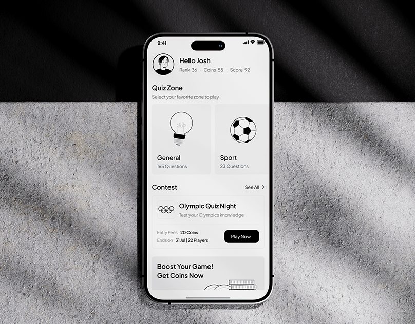
Lumora
A gamified, mobile-first trivia app that turns learning into a rewarding experience.
UI/UX case study · 2026
A modern travel discovery and planning platform that makes trip planning simple, inspiring and effortless.
01 · Overview
The goal was simple to state and hard to execute and let someone go from "I want to go to Italy" to a fully mapped, day by day plan without ever leaving the product or opening a spreadsheet.
This case study
This case study walks through the problem, the design decisions behind the core flows, and the system that ties them together.
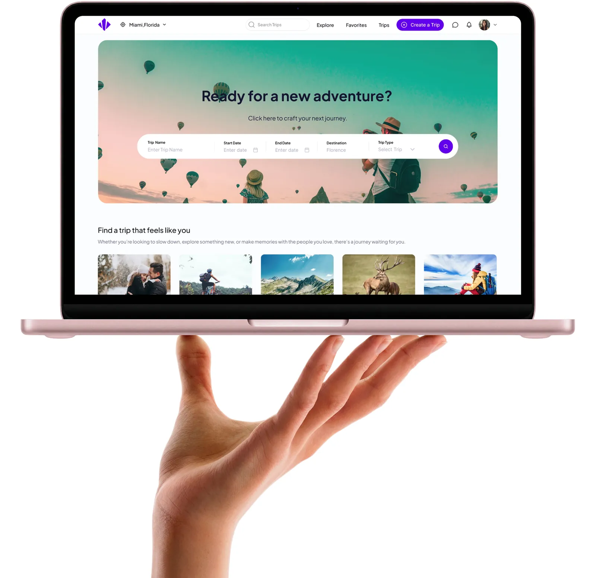
02 · The problem
Planning a trip often means using too many different tools one for inspiration, another for the itinerary, spreadsheets for the budget, maps for directions, and chats for coordinating with others.
Users struggle to turn travel ideas into an actual plan.
Simple lists don’t show how places connect or whether the route is practical.
As a result
Users spend more time organizing their trip than enjoying the experience.
03 · Goals
04 · Design system
Typography isn't just about style—it's about creating clarity, hierarchy, and effortless readability throughout every interaction.
Character
05 · Desktop view
The core flows on desktop: discovering trips on the home page, creating a trip, adding itinerary items, planning each day on the map, managing trips and viewing trip details.
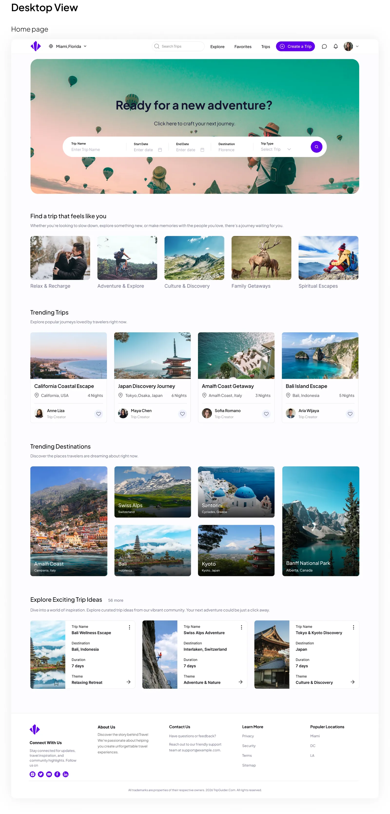
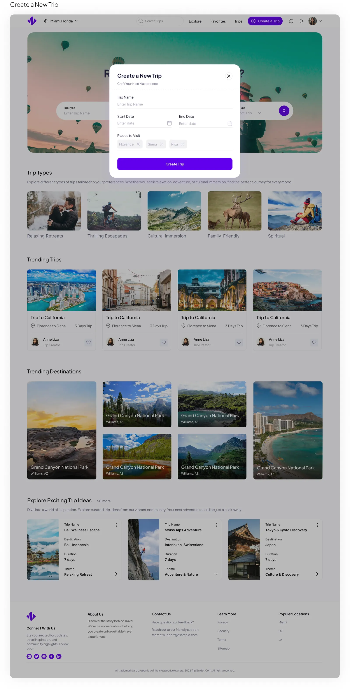
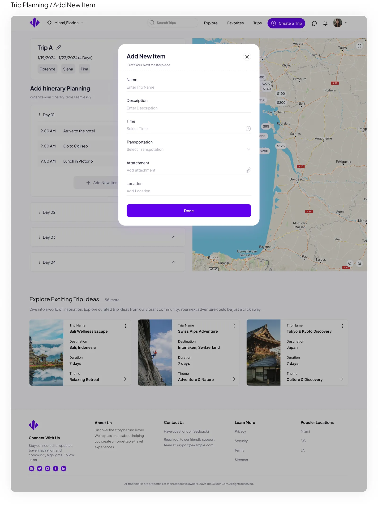
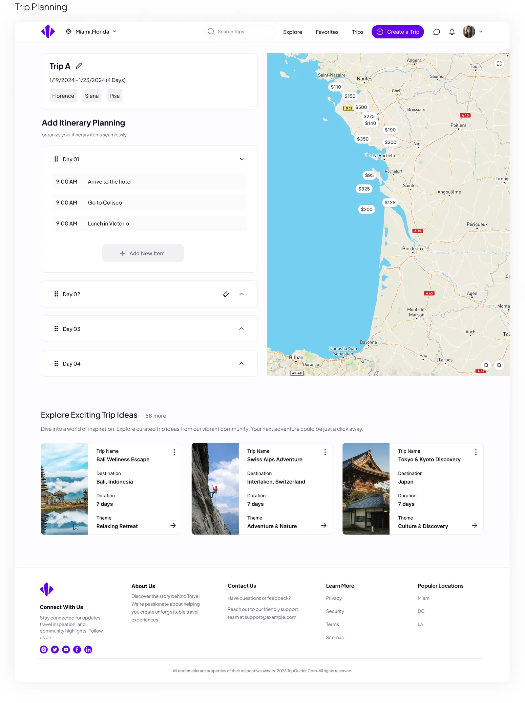
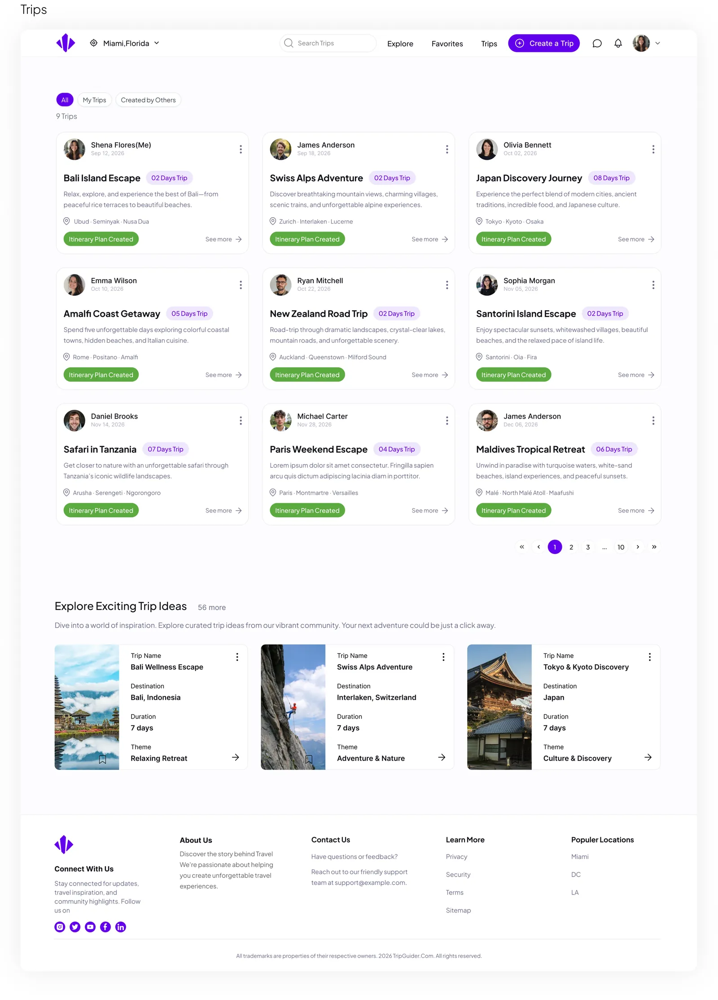
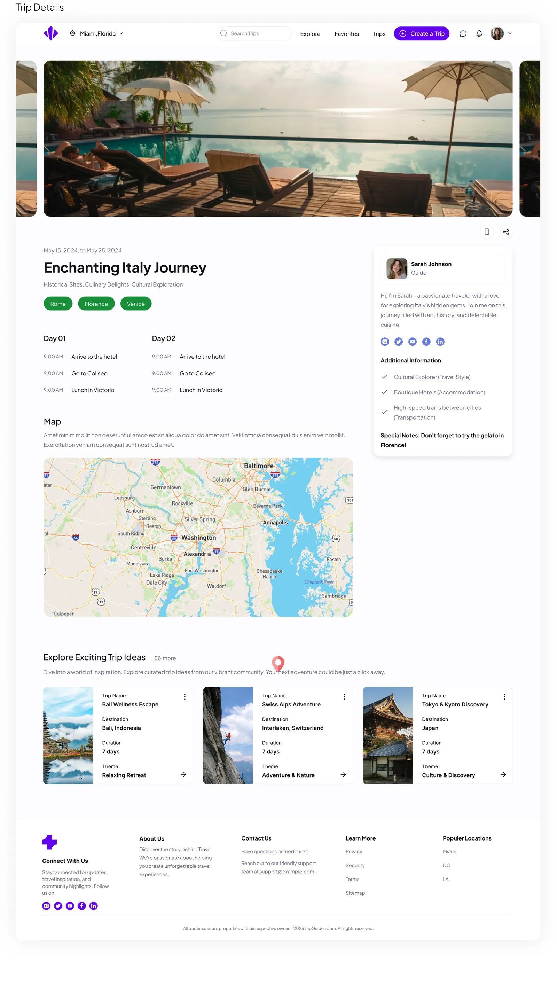
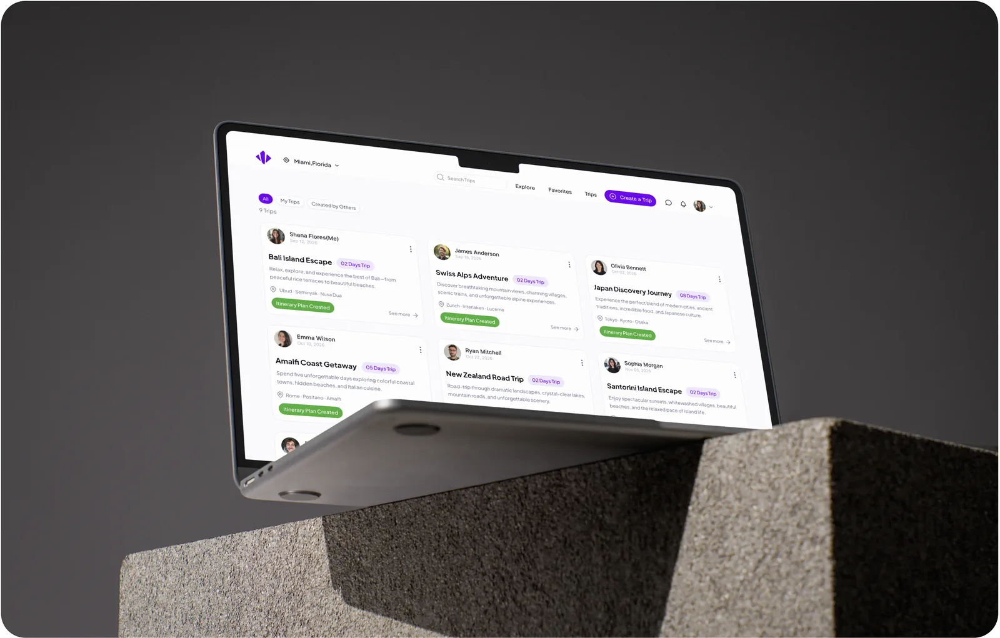
06 · Mobile responsive
Home, trip creation, itinerary planning and trip details, adapted for small screens.
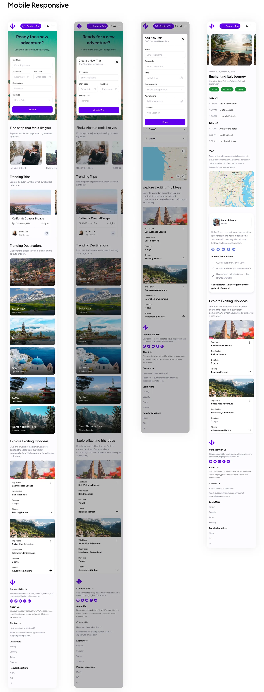
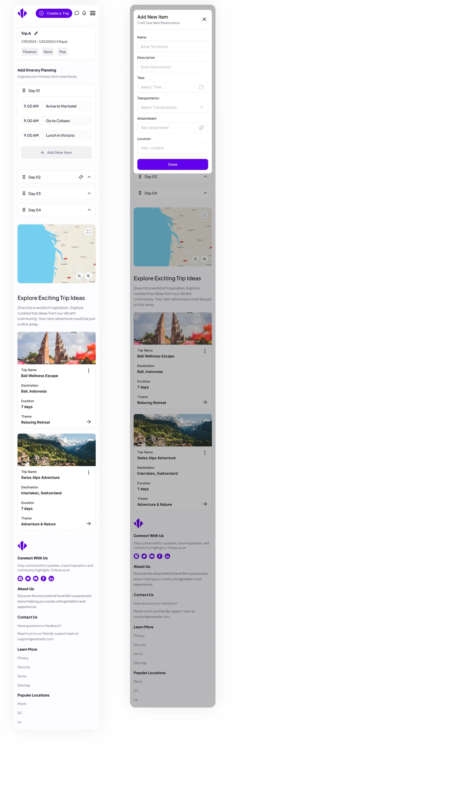
Full project
The complete project, with all screens and details, is published on my Behance profile.
Let's work together
I'm open to full-time roles and freelance projects. Drop me a line and I'll get back to you soon.